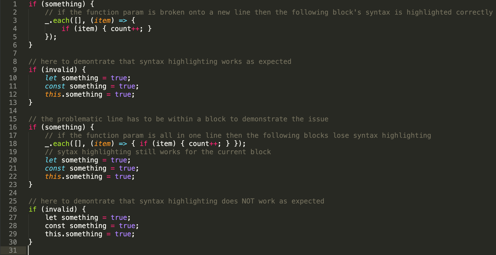
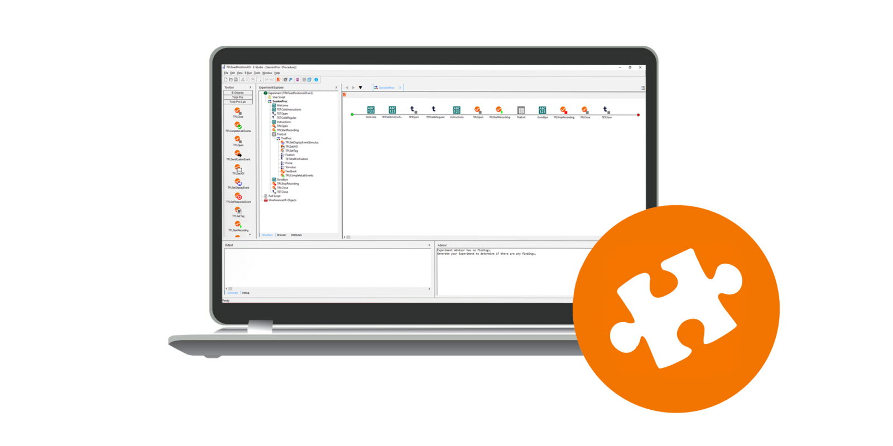

Why you should use Codefizz
Syntax-Highlighting
Add some colours and make your code elegant and easy to identify. Your errors will be easier to debug and there will be no need to sit hours infront of your code staring into oblivion wondering what is going on.

Multi Language Support
Used to code in C++? Don't like Java? You'd rather give up on software development than using python? Fear not, you are almost certain to find native support for all languages known to you here.
If you want to code in a language not natively supported in Codefizz, chances are you already have an extension to enhance the editor and support the language. If not, forums are pretty helpful.
Extensions
Don't find something you are looking for? Extensions to the rescue! From official extensions to user defined extensions, you are spoilt for choices. You can also make custom extensions if you don't find a suitable one. This is one of the most appreciated features of Codefizz!